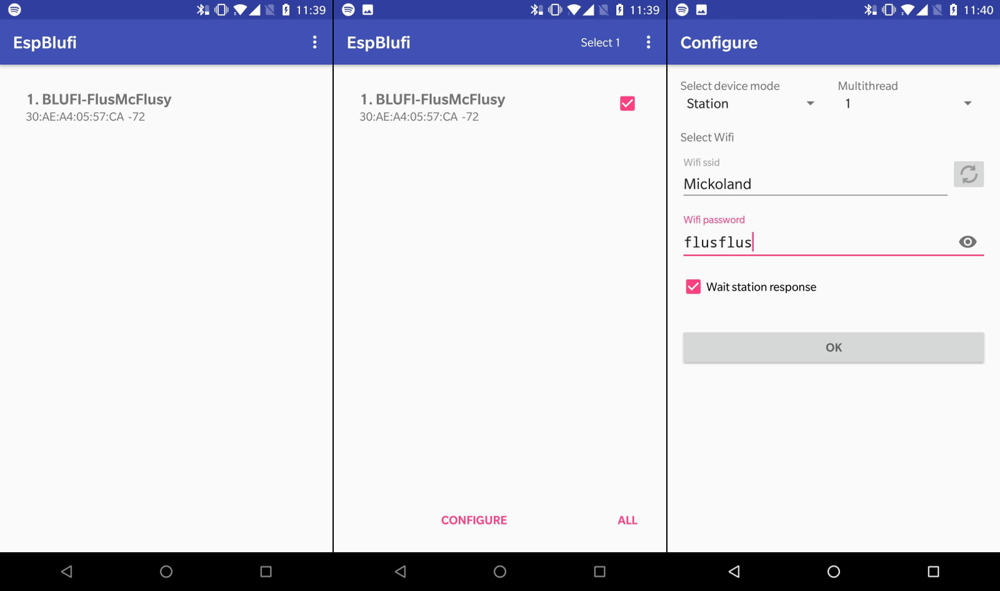

Následující průvodce ti poradí, jak začít programovat míčkoflus
Visual Studio Code
Míčkoflus je programován v editor Visual Studio Code. Stáhněte te si ho a nainstalujte.
Je potřeba nainstalovat rozšíření "PlatformIO IDE". Po nainstalování rozšíření klikněte na "Reload", a po
restartu vyčkejte, dokud PlatformIO nestáhne své závislosti (mělo by o tom informovat v terminálovém okně ve spodní části).
Stáhněte si demo projekt pro míčkoflus.
Pokud znáte verzovací nastroj GIT, tak ho použijte, jinak stáhněte zip archiv.
Po instalaci PlatformIO IDE rozšíření se otevře záložka "PIO Home". V ní otevřete demo projekt, který jste stáhli v předchozím kroku.
Hlavní tělo programu najdete v souboru main.cpp. Upravte tam jméno vlastníka a jméno míčkoflusu, abyste ho našli v Androidí aplikaci.
Připojte míčkoflus k počítači pomocí micro USB kabelu, zapojeného do ESP32 desky. Program zkompilujete a nahrajete do
desky pomocí tlačítka "upload" ve spodní části okna.
Pokud Visual Studio nenajde vaši desku, možná je potřeba upravit možnost upload_port v souboru platformio.ini.

Po prvním spuštění programu na míčkoflusu je třeba nastavit wifi, na kterou se má připojovat. Stáhněte si aplikaci EspBlufi, spusťte ji, a v seznamu zařízení najděte to vaše. Kliknutím na Configure nastavte WiFi pro váš míčkoflus. Musí to být ta stejná, na které je váš telefon, na robotáboře 2018 použijte WiFi Mickoland s heslem flusflus.
Pro ovládání míčkoflusu stáhněte aplikaci RBController. Při spuštění jméno majitele na stejnou hodnotu, na kterou jste nastavili OWNER v souboru main.cpp. Ujistěte se, že jste na stejné WiFi jako je míčkoflus, a měl by se zobrazit v seznamu.
Samotné ovládání je řešeno pomocí HTML stránky, která je umístěná na míčkoflusu. Můžete ji volně editovat, najdete ji v data/index.html. Po změně je potřeba stisknout "Upload" ve Visual Studiu, a poté "Obnovit" v RBController aplikaci.
To platí i pro jiné změny ve firmwaru nebo restartování robota.
Můžete začít programovat! Doporučené čtení:
{kind=link}
{kind=link}
{kind=link}
{kind=link}
{kind=link}
{kind=link}
{kind=link}